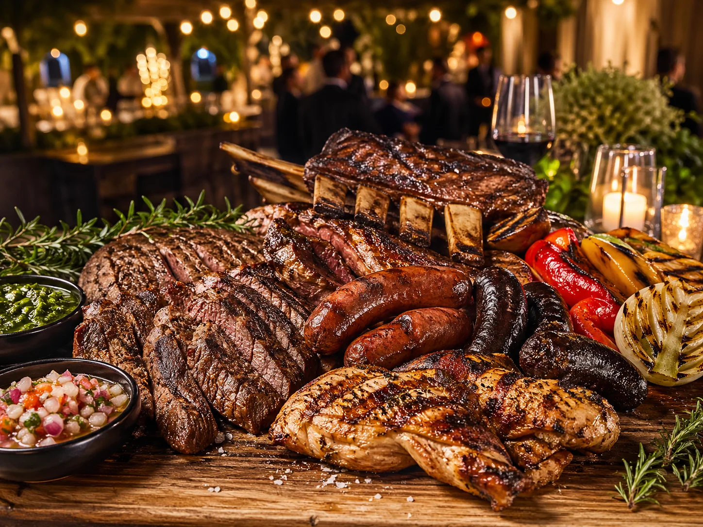
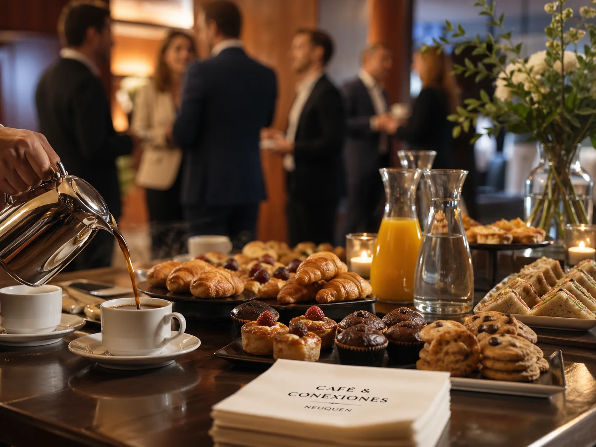
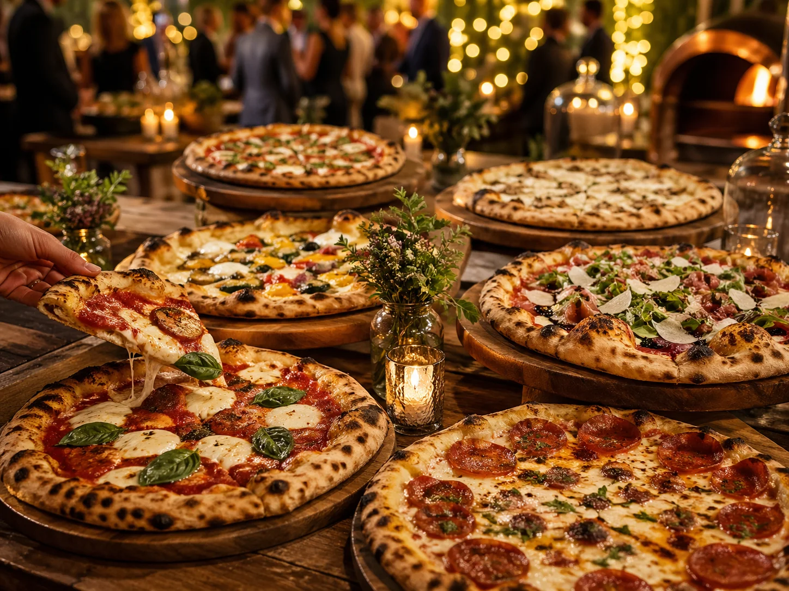
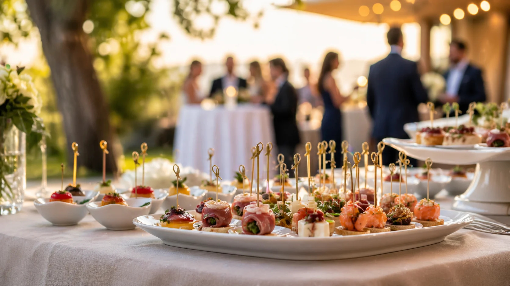
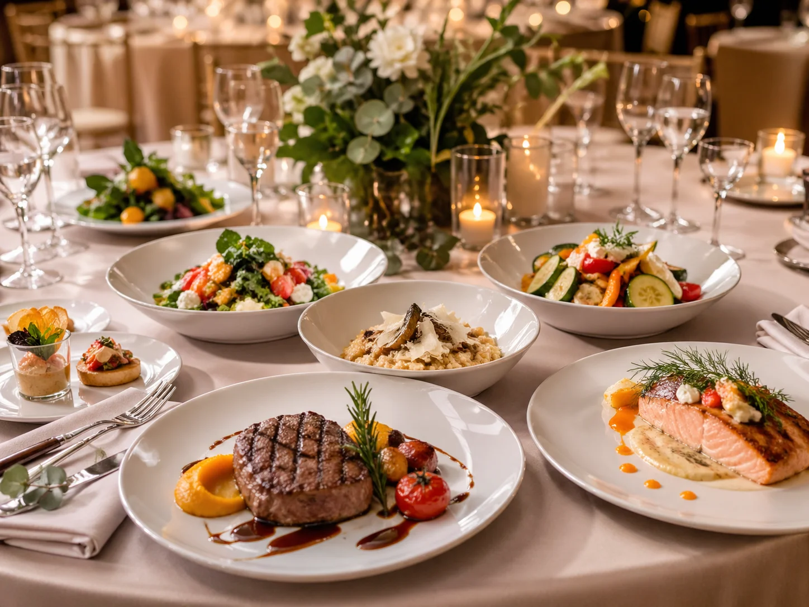

Pernil para eventos
Pernil de novillito o cerdo, ideal para cumpleaños, fiestas familiares y eventos sociales.
Ver pernilServicio de catering para cumpleaños, reuniones familiares, recepciones, eventos empresariales, fiestas privadas y celebraciones especiales en Neuquén capital. Pernil, parrilladas, finger food, pizza party, coffee break, viandas y menús personalizados.
Mirá cómo trabajamos cada detalle: mesas preparadas, recepciones, servicio de catering, presentación de platos y ambientación para eventos sociales, familiares y corporativos en Neuquén.
Propuestas para cumpleaños, reuniones familiares, eventos empresariales, fiestas privadas, recepciones e inauguraciones.
Pernil de novillito o cerdo, ideal para cumpleaños, fiestas familiares y eventos sociales.
Ver pernil
Parrilladas abundantes, sabrosas y con presentación cuidada para eventos.
+54 9 2993 32-3042
Coffee break para reuniones, capacitaciones, oficinas y eventos corporativos.
+54 9 2993 32-3042
Una propuesta rica, informal y rendidora para cumpleaños y reuniones.
+54 9 2993 32-3042Viandas para empresas, equipos de trabajo, jornadas y reuniones.
+54 9 2993 32-3042
Opciones prácticas y atractivas para entradas, lunch y mesas de bienvenida.
+54 9 2993 32-3042
Propuestas a medida según el evento, invitados, estilo y experiencia deseada.
+54 9 2993 32-3042El servicio de pernil funciona muy bien para cumpleaños, eventos familiares, reuniones, recepciones y celebraciones.
Consultá disponibilidad por WhatsApp y contanos fecha, cantidad aproximada de personas y tipo de evento.
En cada evento buscamos combinar sabor, abundancia, presentación y organización para que puedas disfrutar sin preocuparte por la comida.
Cumpleaños, aniversarios, reuniones familiares, fiestas privadas y celebraciones especiales.
Coffee break, viandas, lunch, recepciones, inauguraciones y eventos corporativos en Neuquén.
Imágenes pensadas para mostrar una propuesta visual, abundante y cuidada.
Las opiniones destacan sabor, puntualidad, abundancia, buena atención y una experiencia que da ganas de volver a contratar.
“Excelente servicio, riquísimo todo!”
“Excelente el servicio. Muy recomendable y los seguiré eligiendo porque son muy responsables y cumplidores.”
“Excelente servicio. Sabrosa la comida. Muy recomendable.”
“Excelente servicio. Lo recomiendo y lo volvería a contratar sin duda alguna. La comida riquísima.”
“Excelente servicio. Riquísimo todo. Muy buen trato. Recomiendo a Catering y Eventos Neuquén.”
“Excelente servicio, exquisita la comida y muy abundante. Volvería a contratar.”
“Excelente servicio tanto en calidad como en cantidad. Todo riquísimo. Puntualidad y calidez en la atención.”
“Productos de primera. Las salsas riquísimas y abundantes. Volveremos a elegirlos.”
Te orientamos según el tipo de encuentro, la cantidad de invitados y el estilo que querés lograr.
Propuestas pensadas para que tus invitados coman bien y recuerden la experiencia.
Una mesa bien presentada eleva la percepción de todo el evento.
Respondemos por WhatsApp y ayudamos a definir la mejor opción.
Ofrecemos pernil, parrilladas, finger food, pizza party, coffee break, viandas empresariales, pinchos, bocados y menús personalizados.
Sí. Trabajamos con cumpleaños, reuniones familiares, aniversarios, fiestas privadas, recepciones y celebraciones especiales.
Sí. Realizamos coffee break, viandas, lunch, recepciones, jornadas, capacitaciones, inauguraciones y eventos corporativos.
Escribinos por WhatsApp al +54 9 2993 32-3042 con la fecha, cantidad aproximada de personas, tipo de evento y servicio que te interesa.
Consultá por pernil, parrilladas, finger food, pizza party, coffee break, viandas o una propuesta personalizada.
+54 9 2993 32-3042
Neuquén capital y alrededores
Pernil, parrilladas, finger food, coffee break, pizza party y más